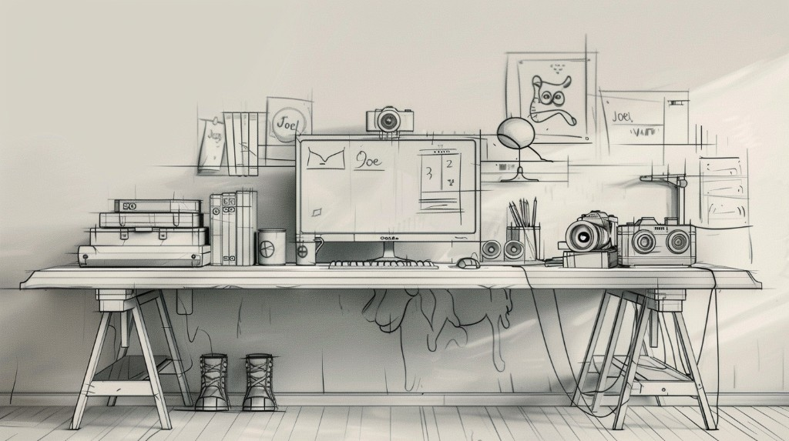

Introduction
A quiet place to collect my story.
Hi, I’m the lion who lives between the lines.
I spend my days collecting stray thoughts and quiet moments, hiding them in the objects scattered on this desk. (Don’t worry, I don’t bite—I only code.)
The world out there is loud, but here, everything waits for you.
Hover to find the glow; click to hear the story.
Oh! You found me.
About
Who I am.
深圳大学网新系，一个在逻辑与感性间游走的 INFP。
喜欢音乐的流动，Citywalk 的节奏，和电影里的光影瞬间。
我习惯用镜头捕捉生活里的温柔，也热爱猫咪、边牧与萨摩耶带来的治愈。
对我而言，生活是一场缓慢的星际旅行，每一个灵感都是心底升起的微光。
在这里，我只想享受自由漂浮的每一个瞬间。
Works
Galaxies of Creation
每个作品，都是一颗独立的星球。
数据课程里做过的几次探险：把电影放进图表、把日常做成小程序界面，也试过让代码替我去拉一拉网上的片单。
《电影世界可视化》 影像与数据叠在一起，像在调情感的色盘。 《拾领星球》 一颗用来收集生活碎片的创意小星球。 《数据抓取》 从小小的爬虫脚本到一张可以翻的表。 《AI建模》 把角色放进可交互视窗里，旋转与缩放之间，像在近距离打量一个小宇宙。

Reading
Reading
Hiking
Vibe Coding
Photography
Music
Basketball
Hover to discover, click to explore the stories behind the lines.
Hobbies
Things I return to.
Guestbook
Leave a note.
A demo corner for messages.
Your note has joined the page.
A quiet hello from the wall.
Short notes read better than long ones.
Nothing here is urgent.
Contact
Let’s talk.
Email, WeChat, or any way you prefer.
Tap to copy — keep it simple.